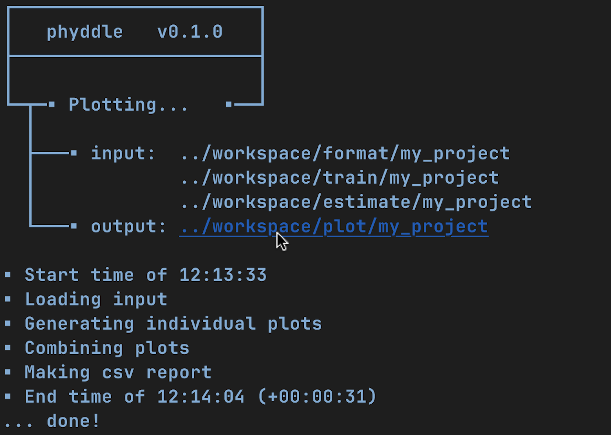

Tricks
Here are a few tricks for using phyddle using a Unix-based terminal. These commands assume a standard phyddle workspace directory structure.
Make a new config file
# Create and modify new config file
phyddle --make_cfg
# Rename new config
mv config_default.py my_new_config.py
# Design new config
edit my_new_config.py
# Run using new config
phyddle -c my_new_config.py
Run a pipeline with modified command-line settings
# Run full pipeline while changing calibration and validation proportions
phyddle -c config.py --cal_prop 0.10 --val_prop 0.10
Re-run part of the pipeline with modified command-line settings
# Re-run pipeline Train, Estimate, and Plot steps with new training settings
phyddle -c config.py -s TEP --num_epoch 10 --trn_batch_size 64
Redirect input/output across pipeline steps
# Run full pipeline
phyddle -c config.py
# Re-run Train, Estimate, Plot steps with new settings, saved to other_project
phyddle -c config.py \
-s TEP \
--trn_dir ../other_project/train \
--est_dir ../other_project/estimate \
--plt_dir ../other_project/plot \
--num_epochs 40 \
--trn_batch_size 512
# Alternatively, point `dir` to other project point Format to this project
phyddle -c config.py \
-s TEP \
--dir ../other_project \
--fmt_dir ./format \
--num_epochs 40 \
--trn_batch_size 512
Simulate new training examples
# Simulate training examples 0 to 999, storing results
# workspace/simulate/my_project
phyddle -s S -c config.py --start_idx 0 --end_idx 1000
# Simulate 4000 more training examples, 0 to 4999
phyddle -s S -c config.py --sim_more 4000
# Perform remaining Format, Train, Estimate, Plot steps
phyddle -s FTEP -c config.py
# ...or, to Simulate more and re-run all steps
phyddle -c config.py --sim_more 4000
Quick access to workspace directories from console via GUI
On Mac OS X, you can press the Option key and click a directory path to open a Finder window to that directory.
{kind=link}
